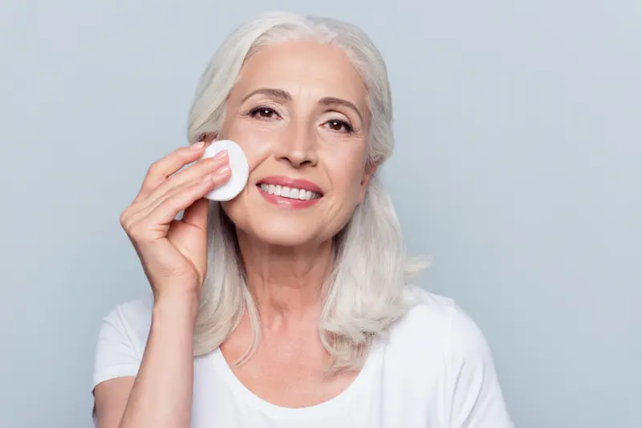
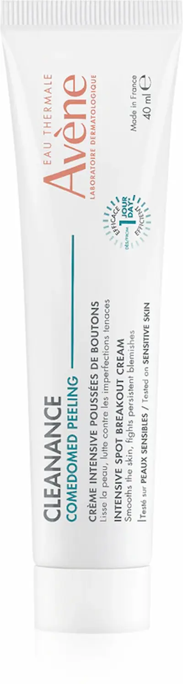
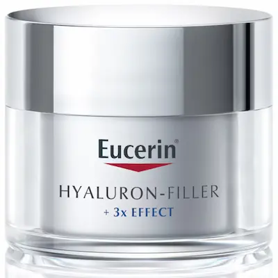
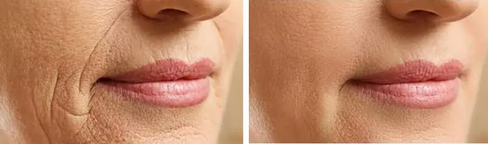

Ce sunt primele semne de îmbătrânire și când apar?
Primele semne de îmbătrânire nu sunt doar ridurile, ci o serie de schimbări subtile în textura și tonusul pielii. Spre deosebire de îmbătrânirea genetică, îmbătrânirea prematură este adesea rezultatul „inflam-aging-ului” — un proces inflamator silențios care indică faptul că pielea începe să piardă colagen și nu se mai poate regenera la fel de rapid ca în tinerețe.
Este esențial de înțeles: prevenția este mult mai eficientă decât corectarea. În România, unde expunerea la soare în timpul verii este intensă și poluarea urbană este ridicată, stresul oxidativ accelerează degradarea elastinei. Fără o strategie anti-age timpurie, liniile fine de deshidratare se transformă rapid în riduri de expresie persistente, iar tenul își pierde luminozitatea naturală.
Cauzele îmbătrânirii premature: de la fotoîmbătrânire la stilul de viață
Principalul declanșator este scăderea producției de acid hialuronic și încetinirea reînnoirii celulare. Nu este afectată doar suprafața pielii, ci și structura de susținere: când bariera de protecție slăbește, radicalii liberi distrug fibrele de colagen, un proces care stă la baza pierderii fermității și a apariției petelor pigmentare.
Un factor critic în orașele aglomerate este „expozomul” — suma factorilor externi care ne îmbătrânesc pielea. Poluarea și lumina albastră a ecranelor generează un stres oxidativ constant, lăsând tenul tern și obosit. Rezultatul este un ten care își pierde elasticitatea și care „ține minte” fiecare noapte nedormită sau zi fără protecție solară. O îngrijire corectă la 25-30 de ani nu trebuie să fie „agresivă”, ci „preventivă și antioxidantă”.
Reguli esențiale pentru menținerea tinereții pielii
Ingrediente esențiale pentru tinerețea tenului
| Ingredient | Acțiune Anti-Age |
|---|---|
| Retinol (Vitamina A) | Standardul de aur: accelerează reînnoirea celulară și stimulează producția de colagen pentru a reduce ridurile. |
| Vitamina C | Puternic antioxidant care neutralizează radicalii liberi, iluminează petele pigmentare și redă strălucirea. |
| Peptide | „Mesageri” celulari care semnalează pielii să producă mai multă elastină, îmbunătățind vizibil fermitatea. |
| Acid Hialuronic | Reține de 1000 de ori greutatea sa în apă, „umplând” liniile fine cauzate de deshidratare. |

Cele mai bune produse pentru primele semne de îmbătrânire


Greșeli care accelerează îmbătrânirea tenului
Cum să menții un aspect tânăr pe termen lung?
Secretul unui ten care îmbătrânește frumos nu stă în intervenții radicale, ci în consecvența rutinei zilnice. Primele semne de îmbătrânire sunt un semnal că pielea are nevoie de susținere metabolică pentru a contracara procesele oxidative.
Pentru rezultate durabile, adoptă o strategie bazată pe protecție dimineața (antioxidanți + SPF) și regenerare seara (retinoizi sau peptide). Această abordare duală nu doar că va estompa ridurile existente, dar va încetini semnificativ apariția altora noi, păstrând densitatea și elasticitatea pielii pentru mai mulți ani.

Protocol Anti-Age: Dimineața vs Seara
Pentru a încetini procesul de îmbătrânire, este esențial să împarți rutina în două faze strategice: protecție antioxidantă și regenerare celulară.
| Momentul zilei | Etapa de îngrijire | De ce este necesar? |
|---|---|---|
| Dimineața | Ser cu Vitamina C + SPF 50+ | Neutralizează radicalii liberi și previne fotoîmbătrânirea (petele și ridurile cauzate de soare). |
| Seara | Curățare dublă + Retinol / Peptide | Stimulează sinteza de colagen și repară ADN-ul celular degradat în timpul expunerii la factorii externi. |
| Tratament (Zilnic) | Acid Hialuronic / Loțiune Hidratantă | Menține volumul facial și previne formarea liniilor fine cauzate de deshidratarea profundă. |
| SOS-Care | Mască cu Antioxidanți / Bio-celuloză | O infuzie rapidă de nutrienți pentru a revitaliza tenul obosit după o zi lungă în mediul urban. |
Sfat pentru România: Verile caniculare din zonele de câmpie (Muntenia, Dobrogea) necesită o reaplicare riguroasă a protecției solare la fiecare 2 ore. Radiațiile UV intense din țara noastră sunt principalul vinovat pentru distrugerea prematură a rețelei de elastină din derm.
„Expozomul” urban și îmbătrânirea prematură
În România, poluarea atmosferică și lumina albastră (HEV) de la dispozitivele digitale accelerează procesul de îmbătrânire. Particulele poluante din orașele mari se atașează de piele, generând micro-inflamații care „mănâncă” rezervele de colagen. Rezultatul este un ten care își pierde fermitatea mult mai devreme decât ar fi natural.
În aceste condiții, soluția este dubla curățare seara pentru a elimina resturile de poluare și utilizarea cremelor bogate în antioxidanți. O rutină anti-age corectă nu doar că șterge semnele oboselii, dar acționează ca un scut invizibil care protejează capitalul de tinerețe al pielii tale în fața stilului de viață modern.
Întrebări frecvente despre primele semne de îmbătrânire
De la ce vârstă ar trebui să încep o rutină anti-aging?
Experții recomandă începerea prevenției în jurul vârstei de 25 de ani. Acesta este momentul în care producția naturală de colagen și elastină începe să scadă lent. O rutină bazată pe antioxidanți și protecție solară la această vârstă va întârzia semnificativ apariția ridurilor profunde mai târziu.
Ridurile fine pot fi complet eliminate cu ajutorul cremelor?
Ridurile fine cauzate de deshidratare pot fi vizibil estompate prin hidratare profundă cu acid hialuronic în câteva zile. Totuși, pentru ridurile de expresie deja formate, este nevoie de ingrediente precum Retinolul, utilizat constant timp de 3-6 luni. În clinicile dermatologice din București sau Cluj, tratamentele cu toxină botulinică sau mezoterapia sunt adesea combinate cu îngrijirea de acasă pentru rezultate optime.
De ce tenul meu pare mai bătrân și lipsit de strălucire iarna?
În România, aerul rece de afară și căldura uscată din interior duc la pierderea apei transepidermice. Pielea deshidratată își pierde volumul, făcând liniile fine mult mai vizibile. Pentru a combate acest aspect „tern”, înlocuiește loțiunile lejere cu creme mai bogate în ceramide și acizi grași în sezonul rece.
Este obligatoriu să folosesc SPF dacă lucrez în interior la birou?
Da, deoarece radiațiile UVA (responsabile pentru îmbătrânire) pătrund prin sticla ferestrelor și sunt prezente pe tot parcursul anului. De asemenea, expunerea prelungită la lumina albastră a monitoarelor poate accelera stresul oxidativ. Un SPF 30 sau 50 aplicat dimineața este cea mai ieftină și eficientă metodă anti-rid pe termen lung.